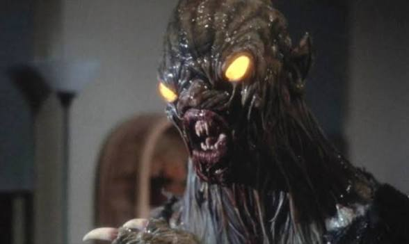

☢️ 🕳️ 🏙️ C.H.U.D. (1984) — CERTIFIED MGC G-4

🏛 MGC LOWER COURT OF APPEALS
- ASSET TITLE: C.H.U.D. (1984)
- OFFICIAL REGISTRY GRADE: Certified MGC G-4 (Good / Heavily Circulated 1980s Grindhouse Alloy)
- LOWER COURT JURISDICTION: Judge Tina (Chief of Cult Classics)
- CASE FILE: #103
📜 THE FORENSIC NARRATIVE BREAKDOWN
Tina walks up 👢👢 to the cold steel bench, tosses an empty coffee cup into the trash can 🗑, and dials her 5x magnifying lens onto this grimy 1984 New York sewer-horror specimen.
- Douglas Cheek’s 1984 cult horror film captures authentic Reagan-era New York grit and features a talented cast (including John Heard, Daniel Stern, and John Goodman), though it suffers from a slow-burning opening hour and an underutilization of its practical creature effects.
1. Severe First-Hour Pacing Drag & Bureaucratic Exhaust
- Under our strict 5x numismatic magnifying lens, Douglas Cheek’s 1984 sewer-horror relic exhibits massive structural drag across its opening hour. Instead of delivering the relentless underground monster carnage promised by its iconic VHS box art, the screenplay bogs down in repetitive, talk-heavy scenes of characters wandering dimly lit Manhattan streets, rifling through city hall paperwork, and arguing over toxic-waste cover-ups. This slow-burning procedural bloat leaks narrative engine oil and stalls the thriller momentum before the creatures ever truly take center stage.
2. Shadowy Lighting Corrosion & Underutilized Creature Metallurgy
- Inspecting the visual surface under high magnification reveals a frustratingly obscured strike. While the practical rubber monster suits, glowing eyes, and slimy subterranean gore carry authentic 1980s grindhouse charm, the cinematography keeps the Cannibalistic Humanoid Underground Dwellers buried in pitch-black shadows and rapid, disjointed cuts. Combined with muffled low-budget sound mixing and murky underground lighting, the production hides its best physical assets rather than letting them shine on the planchet.
3. Overqualified Cast Alloy vs. Half-Baked Third-Act Execution
- What keeps C.H.U.D. safely off the PO-1 Basal State Floor and locks it squarely into the G-4 Good register is its remarkably strong cast metallurgy. John Heard, Daniel Stern, and Christopher Curry bring grounded, blue-collar conviction to thin roles, backed by an early, memorable cameo from John Goodman as a diner cop. However, even their seasoned screen presence cannot rescue a rushed, muddled third-act climax—complete with a baffling plan to flood the tunnels with gas while the heroes are still trapped inside—leaving deep structural scuffs across the final reel.
⚖️ THE CHIEF’S FINAL DECREE
- “The VHS cover promises non-stop sewer carnage, but the 5x loupe catches a whole lot of walking around in the dark! Great cast and slimy practical suits keep it off the basement floor, but the sluggish pacing locks it right at G-4!”
🔧💥 ☢️ Case Closed. Certified MGC G-4.

• © 2026 MOVIE GRADING CONSENSUS. All Sovereign Rights Reserved.